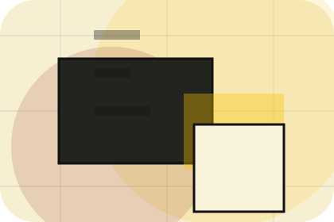
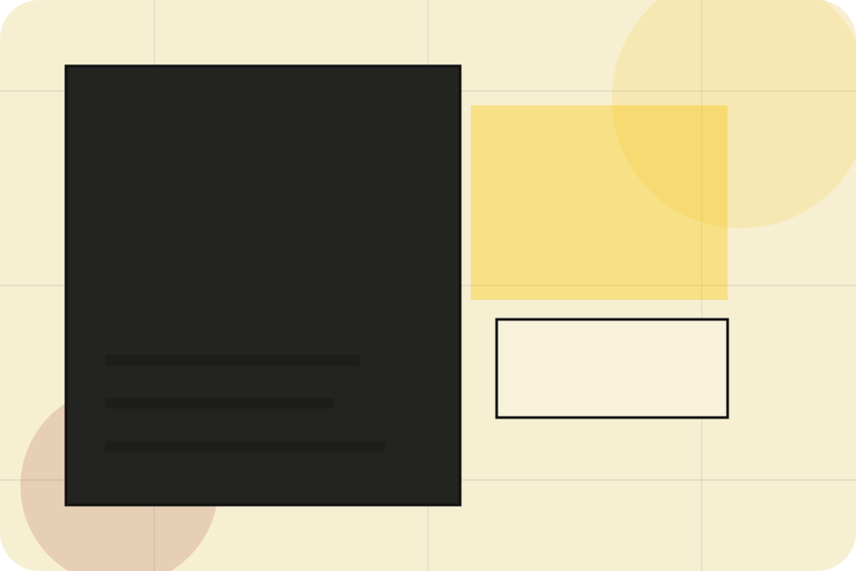
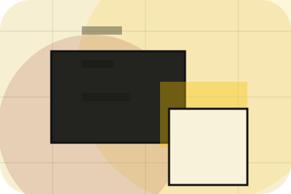
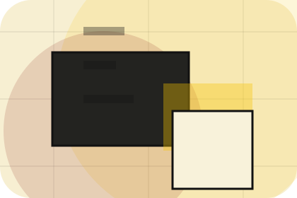
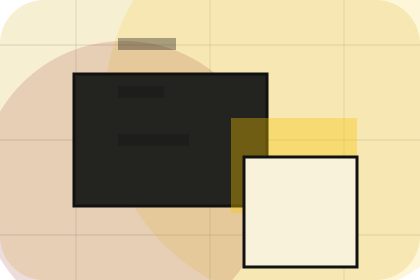
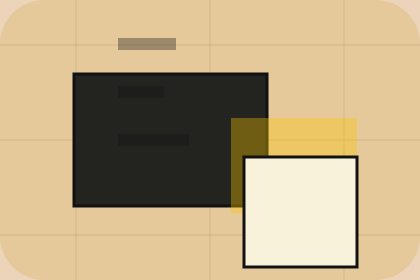

Situation
What the visitor needed before choosing Index, written with enough context to feel real.
Submissions / 01
Submissions opens as a clear publishing decision hub: what Index offers, who it helps, why it matters, and which route to take first.
The first screen combines positioning, proof, primary action, and fast internal navigation, so people can act immediately or compare the rest of the submissions route with context.
Editorial masthead hero
Select the closest route and Index keeps the next step, proof, and follow-up expectation aligned with authority and discovery.

Submissions / 02
Guidelines gives researching visitors a practical route into guides, checklists, and comparison material without leaving the site structure.
Each resource behaves like a useful internal link, giving cold and warm visitors a way to learn, compare, and return to the action path.
Explore SubmissionsA useful entry point for visitors who need more context before they subscribe.
A scannable comparison aid that makes research usable before the next decision.
A route back to support, services, or contact when the visitor is ready to act.
Submissions / 03
Topics adds editorial context to the submissions route, using the print magazine archive structure to support authority and discovery before visitors choose a next step.
Index uses column article cards and focused copy to make the decision easier to scan, aligning the section with authority and discovery rather than filling space.
Explore SubmissionsIndex structures topics around context, judgment, and a clear next route so visitors can compare the block quickly before they subscribe.
SubscribeSubmissions / 05
Standards gives the proof layer for submissions: standards, evidence, and reassurance that make the next decision feel grounded.
Instead of relying on vague claims, Index presents visible standards, process cues, and proof artifacts that help publishing visitors judge fit.
Explore SubmissionsVisible proof that helps visitors believe the claims behind standards.
The quality, safety, or operating expectation this section makes explicit.

What becomes clearer before someone decides whether to subscribe.
Submissions / 06
Rights adds editorial context to the submissions route, using the print magazine archive structure to support authority and discovery before visitors choose a next step.
Index uses column article cards and focused copy to make the decision easier to scan, aligning the section with authority and discovery rather than filling space.
Explore SubmissionsRights gives the page a specific angle instead of repeating the navigation label.
The column article cards show what to compare, what to avoid, and what matters most for publishing, information & knowledge platforms visitors.
The final cue points to a useful internal route so the section keeps the journey moving.
Submissions / 07
Process explains the operating sequence so visitors can see how the first request becomes a clear recommendation and follow-up.
The steps are written from the visitor side: what they do first, what Index clarifies, what they receive, and how support continues.
Explore SubmissionsHow visitors begin this route and what detail is useful at the first step.
What Index reviews, filters, or explains before recommending the next move.
What the visitor receives afterward, including support, proof, or a handoff to the next page.
Submissions / 08
Timeline explains the operating sequence so visitors can see how the first request becomes a clear recommendation and follow-up.
The steps are written from the visitor side: what they do first, what Index clarifies, what they receive, and how support continues.
Explore SubmissionsIndex structures timeline around start, clarify, and a clear next route so visitors can compare the block quickly before they subscribe.
SubscribeSubmissions / 09
Submit adds editorial context to the submissions route, using the print magazine archive structure to support authority and discovery before visitors choose a next step.
Index uses column article cards and focused copy to make the decision easier to scan, aligning the section with authority and discovery rather than filling space.
Explore Submissions

Submit gives the page a specific angle instead of repeating the navigation label.
Submissions / 10
Index closes the submissions route with a clear action, a quick reminder of the value, and a low-friction way to subscribe.
Visitors who are ready can use the primary action. Visitors who are still comparing can scan the section links, proof, and support routes before they subscribe.
SubscribeThe final block keeps the choice simple: act now, compare one more proof route, or send enough detail for a focused response.
Subscribeauthority and discovery
A knowledge platform with magazine columns, archive search, author cards, and newsletter conversion. Submissions ends with a direct path to subscribe, plus enough context for visitors who still need to compare.

SubscribeInformation is provided for planning and should be reviewed for the final client, location, and operating rules.